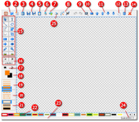
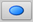

HotShots
Dieser Artikel wurde für die folgenden Ubuntu-Versionen getestet:
Ubuntu 16.04 Xenial Xerus
Ubuntu 14.04 Trusty Tahr
Zum Verständnis dieses Artikels sind folgende Seiten hilfreich:
 Ein Bildschirmfoto (Screenshot) ist mit Ubuntu schnell erstellt. Was aber, wenn man noch Anmerkungen, Hervorhebungen oder erläuternden Text hinzufügen möchte? Natürlich kann man anschließend mit einer beliebigen Bildbearbeitung nacharbeiten, aber manche Wünsche lassen sich je nach Programm nur schwer umsetzen.
Ein Bildschirmfoto (Screenshot) ist mit Ubuntu schnell erstellt. Was aber, wenn man noch Anmerkungen, Hervorhebungen oder erläuternden Text hinzufügen möchte? Natürlich kann man anschließend mit einer beliebigen Bildbearbeitung nacharbeiten, aber manche Wünsche lassen sich je nach Programm nur schwer umsetzen.
Hier kommt das für Linux und Windows verfügbare Programm HotShots  ins Spiel. Neben der Möglichkeit, nicht nur den kompletten Desktop, sondern auch ein einzelnes Programmfenster oder einen bestimmten Ausschnitt zu "fotografieren", können sofort im Anschluss diverse Ergänzungen vorgenommen werden.
ins Spiel. Neben der Möglichkeit, nicht nur den kompletten Desktop, sondern auch ein einzelnes Programmfenster oder einen bestimmten Ausschnitt zu "fotografieren", können sofort im Anschluss diverse Ergänzungen vorgenommen werden.
|  |
| Editor-Fenster von HotShots mit Nummerierungen |
Funktionen:
Verschiedene Bearbeitungswerkzeuge (Einkreisen, Kommentare, Textmarker, etc.)
Bildeffekte (Schattenwurf, Deckkraft, künstlerische Bildränder)
Automatische Aufzählungen (Nummerierung)
Import oder Export via Zwischenablage
Export in viele Grafikformate
Auf Wunsch: automatisches Hochladen bei einem Bildhoster (FreeImageHosting.net
, Imgur.com , Imageshack.us , CanardPC  )
)alternativ: frei definierbares FTP-Konto
Zahlreiche Beispiele der umfangreichen Möglichkeiten sind auf der Homepage zu finden. Ein Programm mit ähnlichen Funktionen ist Shutter, das insbesondere für die Desktop-Oberfläche Unity besser geeignet ist.
Installation¶
 Das Programm ist nicht in den offiziellen Paketquellen enthalten. Zur Installation muss man daher auf ein "Personal Package Archiv" (PPA) [1] ausweichen, wenn man das Programm nicht selbst aus dem Quellcode
Das Programm ist nicht in den offiziellen Paketquellen enthalten. Zur Installation muss man daher auf ein "Personal Package Archiv" (PPA) [1] ausweichen, wenn man das Programm nicht selbst aus dem Quellcode  kompilieren möchte.
kompilieren möchte.
PPA¶
Dariusz Duma stellt sein "Personal Package Archiv" (PPA) [1] als Paketquelle zur Verfügung. In diesem PPA sind zahlreiche andere Programme wie RawTherapee oder Luminance HDR enthalten, die sich mit dem Thema (RAW-)Fotografie und Bildbearbeitung unter Linux beschäftigen. Um Problemen mit den offiziellen Paketquellen vorzubeugen, wird empfohlen, das PPA nach der Installation wieder zu deaktivieren oder Apt-Pinning zu nutzen.
Adresszeile zum Hinzufügen des PPAs:
ppa:dhor/myway
Hinweis!
Zusätzliche Fremdquellen können das System gefährden.
Ein PPA unterstützt nicht zwangsläufig alle Ubuntu-Versionen. Weitere Informationen sind der  PPA-Beschreibung des Eigentümers/Teams dhor zu entnehmen.
PPA-Beschreibung des Eigentümers/Teams dhor zu entnehmen.
Damit Pakete aus dem PPA genutzt werden können, müssen die Paketquellen neu eingelesen werden.
Nach dem Aktualisieren der Paketquellen erfolgt die Installation über das folgende Paket [2]:
hotshots (ppa)
 mit apturl
mit apturl
Paketliste zum Kopieren:
sudo apt-get install hotshots
sudo aptitude install hotshots
Fremdpaket¶
Wer davor zurück scheut, wegen eines einzelnes Pakets gleich ein komplettes PPA einzubinden (und anschließend wieder zu entfernen), kann sich auch ein einzelnes Fremdpaket herunterladen und manuell [3] installieren. Der Paketname lautet: hotshots_VERSIONdhor~UBUNTUVERSION_ARCHITEKTUR.deb. Nachteilig ist, dass man sich um Programmaktualisierungen in Zukunft selbst kümmern muss.
Hinweis!
Fremdpakete können das System gefährden.
Verwendung¶
Nach erfolgreicher Installation ist das Programm bei Ubuntu-Varianten mit einem Anwendungsmenü unter "Zubehör -> HotShots" zu finden [4]. In der Praxis gliedert sich die Handhabung in zwei Schritte:
Erstellen eines Bildschirmfotos
Nacharbeiten im integrierten Editor
Allerdings ist es auch möglich, den Editor direkt aufzurufen, um ein früher erstelltes Bildschirmfoto zu bearbeiten. Die Reihenfolge ist daher Geschmackssache.
Benutzt man das Schließen-Symbol  zum Beenden des Programms, minimiert sich HotShots (nach einem entsprechenden Hinweis) in das Benachrichtigungsfeld im Panel. Möchte man das Programm tatsächlich beenden, benutzt man entweder das Kontextmenü
zum Beenden des Programms, minimiert sich HotShots (nach einem entsprechenden Hinweis) in das Benachrichtigungsfeld im Panel. Möchte man das Programm tatsächlich beenden, benutzt man entweder das Kontextmenü  des Symbols oder die Schaltfläche innerhalb des Programmfensters.
des Symbols oder die Schaltfläche innerhalb des Programmfensters.
Bildschirmfoto erstellen¶
Je nach Wunsch stehen mehrere Erfassungsmodi zur Verfügung:
der komplette Desktop
ein einzelnes Programmfenster
eine bestimmter Bereich des Desktops (rechteckig)
Freihandauswahl (beliebige Form)
Dann braucht man nur noch die Verzögerung festzulegen, wo das Bildschirmfoto gespeichert werden soll (der Dateiname wird in den Einstellungen festgelegt) und ob anschließend eine weitere Aktion (Editor starten, automatischer Upload, etc). erforderlich ist. Das HotShots-Fenster selbst wird während der Aufnahme ausgeblendet.
Bildschirmfoto nachbearbeiten¶
Das Editor-Fenster zum Nachbearbeiten ist das Glanzstück des Programms. Bewusst einfach gehalten und optisch Windows Paint oder Tux Paint ähnlich, beherbergt es diverse Bearbeitungsfunktionen. Tooltipps helfen bei der Bedienung weiter, da zu Gunsten von Symbolleisten auf Menüs verzichtet wird.
| Editor-Fenster mit Beispielen |
| Bearbeitungsfunktionen im Schnappschuss-Editor | |
| Symbol | Funktion |
| Selektieren (Auswahlwerkzeug) | |
| Textwerkzeug | |
| Einfache Linie | |
| Einkreisen | |
| Linien-Auswahl | |
| Polygon-Auswahl | |
| Bezierkurve | |
| Zuschneiden | |
| Mit Rechteck hervorheben | |
|  | Mit Kreis/Ellipse hervorheben |
 | Pfeile |
| Nummerierung | |
| Textmarker | |
| Lupe (Zoom) | |
| Bild einfügen | |
| Verpixeln | |
| Text verkleinern | |
| Text vergößern | |
Unterhalb der Bearbeitungsfunktionen stehen weitere Werkzeuge zur Verfügung:
Farbauswahl
Linienstärke
Linienform (durchgezogen, gepunktet, etc.)
Füllung
Am unteren Bildschirmrand erlauben vordefinierte Farbkombinationen eine bequeme Auswahlmöglichkeit per Mausklick. Möchte man die Bearbeitung zwischenspeichern, nutzt HotShots dafür ein eigenes Speicherformat (.hot, ein XML-Derivat).
Ein kleiner Schwachpunkt ist eine fehlende Rückgängig-Funktion (in Version 2.0.0), die sich aber auf andere Weise umsetzen lässt: Man wählt die irrtümlich gesetzte Element aus () und löscht dieses mit der Taste Entf oder dem Symbol rechts außen.
Bildeffekte¶
Mit Bildeffekten (erreichbar über die obere Symbolleiste) sind Bearbeitungen gemeint, die sich auf ein Bild als Ganzes beziehen. Dazu zählt z.B. ein Schattenwurf rund um das Motiv. Möchte man einen Effekt wieder rückgängig machen, wählt man "kein Bildeffekt" aus.
Elementschatten¶
Darüber hinaus können auch Elemente wie eingefügter Text mit der rechts danebenliegenden Schaltfläche "Elementschatten" mit einem Schatteneffekt versehen werden. Vorher zuerst ein Objekt selektieren und dann den Schatten aktivieren bzw. deaktivieren. Nicht alle eingefügten Elemente können mit einem Schatten versehen werden. Eine Ausnahme ist beispielsweise die Textmarker-Funktion.
Ebenen¶
Der Editor beherrscht zusätzlich den Umgang mit Ebenen. Während das Motiv selbst die unterste Ebene darstellt, können so hinzugefügte Objekte nach Bedarf eine (oder mehrere) Ebenen nach oben bzw. unten verschoben werden. Diese Arbeitsweise ist insbesondere bei deckenden Elementen nützlich.
Einstellungen¶
 Die Konfigurationsmöglichkeiten sind relativ umfangreich, wobei in der Praxis nicht jede Option wirklich relevant ist. Nicht verwechseln sollte man allerdings die Einstellungen vor dem Erstellen eines Bildschirmfotos mit den eigentlichen Programmeinstellungen. Da HotShots kein Menü verwendet, sind diese nur über "About -> Einstellungen" im Hauptfenster zu finden.
Die Konfigurationsmöglichkeiten sind relativ umfangreich, wobei in der Praxis nicht jede Option wirklich relevant ist. Nicht verwechseln sollte man allerdings die Einstellungen vor dem Erstellen eines Bildschirmfotos mit den eigentlichen Programmeinstellungen. Da HotShots kein Menü verwendet, sind diese nur über "About -> Einstellungen" im Hauptfenster zu finden.
Gegliedert ist die Konfiguration in folgende Abschnitte:
"Programmstart" - Autostart (auch minimiert) und Spracheinstellungen
"Schnappschuss" - Optionen für Bildschirmfotos, z.B. Standarddateiname, Bildeffekt, Skalierung und Speicherformat (Standard: PNG)
"Tastenkürzel" - Kurztasten für einige wichtige Funktionen (weitere können selbst festgelegt werden). Auf Wunsch kann die Verwendung der systemweiten Tastenkürzel zum Erstellen von Bildschirmfotos aktiviert werden.
"Netzwerk" - Auswahl des Online-Dienstes zum Hochladen und Proxy-Einstellungen
"Online-Dienste" - nur für FTP relevant: Angaben zu Server, Port, Benutzername und Kennwort
Die Einstellungen werden in der (versteckten) Datei ~/.config/TheHive/HotShots.conf im Homeverzeichnis gespeichert.
 Programmübersicht
Programmübersicht- Erstellt mit Inyoka
-
 2004 – 2017 ubuntuusers.de • Einige Rechte vorbehalten
2004 – 2017 ubuntuusers.de • Einige Rechte vorbehalten
Lizenz • Kontakt • Datenschutz • Impressum • Serverstatus -
Serverhousing gespendet von